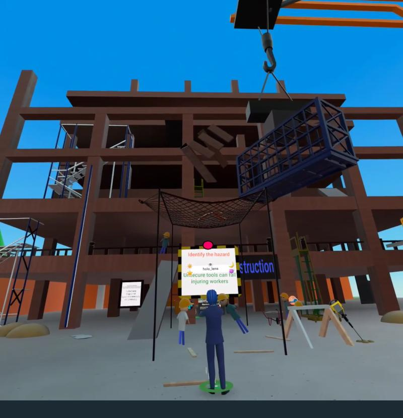
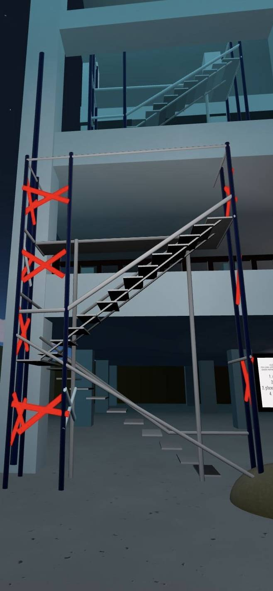
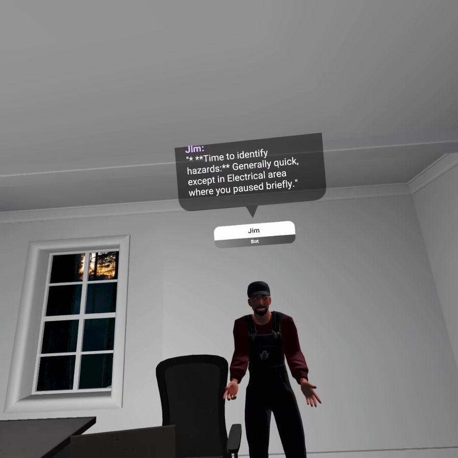
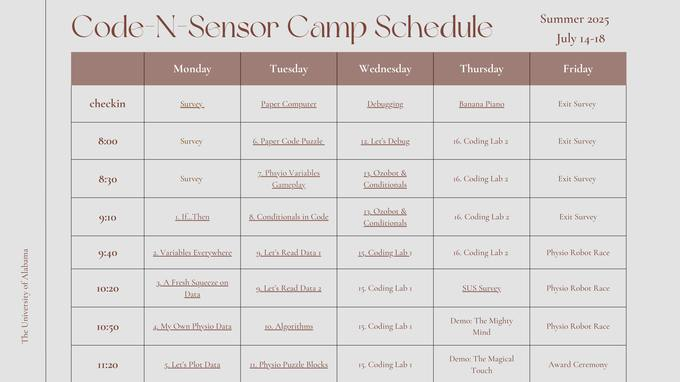
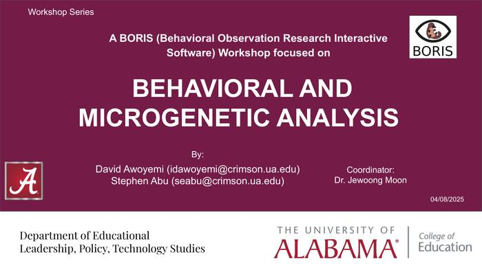

2023 - Present
Research Assistant
The University of Alabama, Tuscaloosa, AL, United States
This page keeps the stronger case-study structure from the earlier website while connecting it to the same shared automated workflow.
These studies show how David approaches design, evaluation, and scholarly contribution across immersive learning, AI literacy, and multimodal analytics.
These roles come directly from the CV and provide context for the design and research work described below.
Research Assistant
The University of Alabama, Tuscaloosa, AL, United States
Research and Instructional Design Assistant
Federal University of Technology Minna, Nigeria
Teaching Assistant
The University of Alabama, Tuscaloosa, AL, United States
Educator and Classroom Instructor
Model Secondary School, Federal University of Technology, Minna
The content below preserves the narrative richness of the previous site while using the new shared design system and deploy workflow.
University of Alabama · Civil engineering safety training · Mixed-methods design and analytics



Construction safety instruction often depends on low-immersion demonstrations that make hazard recognition difficult to practice authentically before students enter high-risk settings.
The project uses generative-AI-supported virtual environments and structured hazard-identification tasks to study how learners notice risks, shift strategies, and develop safer decision patterns in authentic contexts.
This case anchors a broader research direction: immersive environments become more valuable when they are not only engaging, but also analytically transparent enough to reveal how expertise develops over time.
University of Alabama · Undergraduate AI literacy design · Cross-disciplinary curriculum development



Students increasingly encounter AI tools in academic and professional settings, yet many programs still lack structured, ethical, and workforce-relevant AI literacy experiences.
AI-WISE organizes practical AI skills, ethical reasoning, and reflective evaluation into modular learning experiences that faculty can adapt without needing deep technical specialization.
The strongest lesson here is that AI literacy is not only about tools. It is about helping learners interpret, question, and apply AI systems responsibly in disciplinary and civic contexts.
NSF ITEST context · Elementary computing experiences · Multimodal evaluation and broadening participation



Traditional evaluation methods often miss moment-to-moment evidence of attention, cognitive load, and engagement, especially with younger learners who may not fully articulate what they experienced.
This work integrates physiological and behavioral data with more familiar assessments to create a richer view of how learners experience computing tasks and where instructional support is needed.
The project reinforced an important design belief: evaluation should not be an afterthought. It should be built into how we understand learning as it unfolds, especially in novel technology environments.
The case narratives remain curated, while the linked academic record on the profile page continues to regenerate from the Word CV.